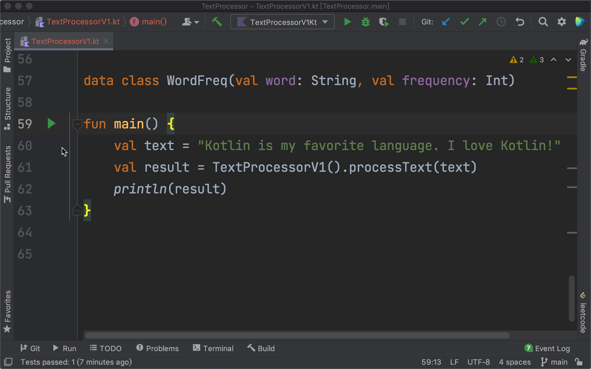
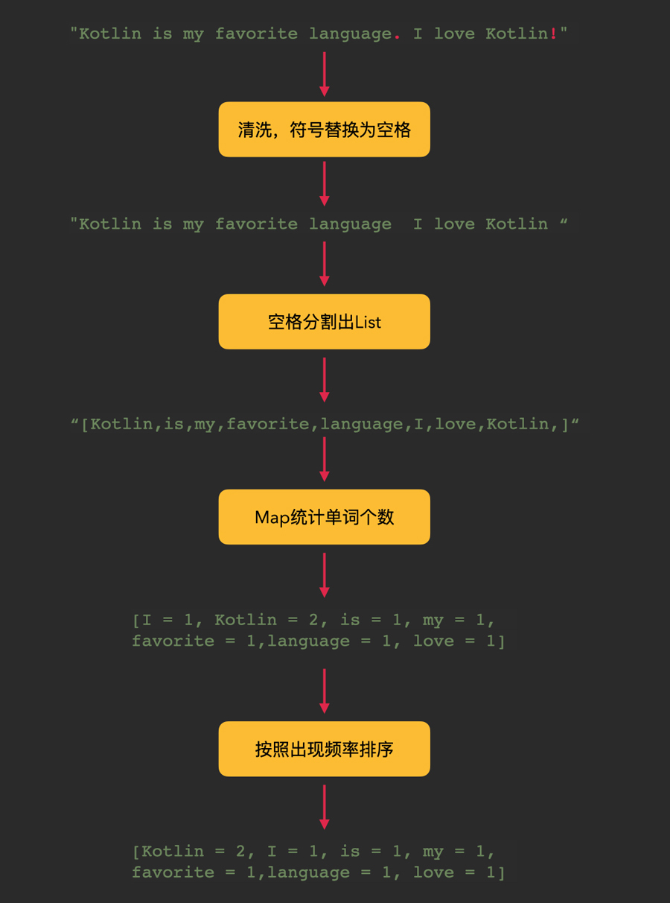
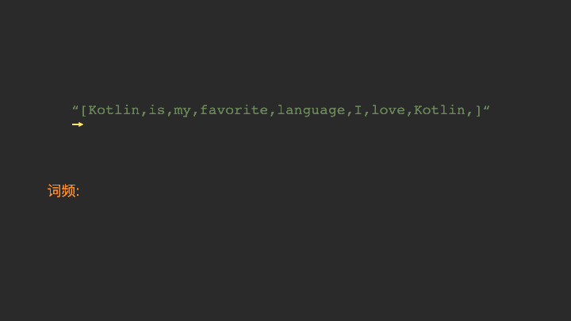
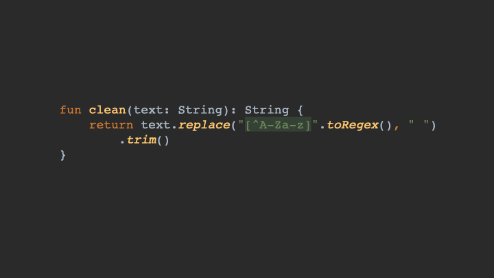
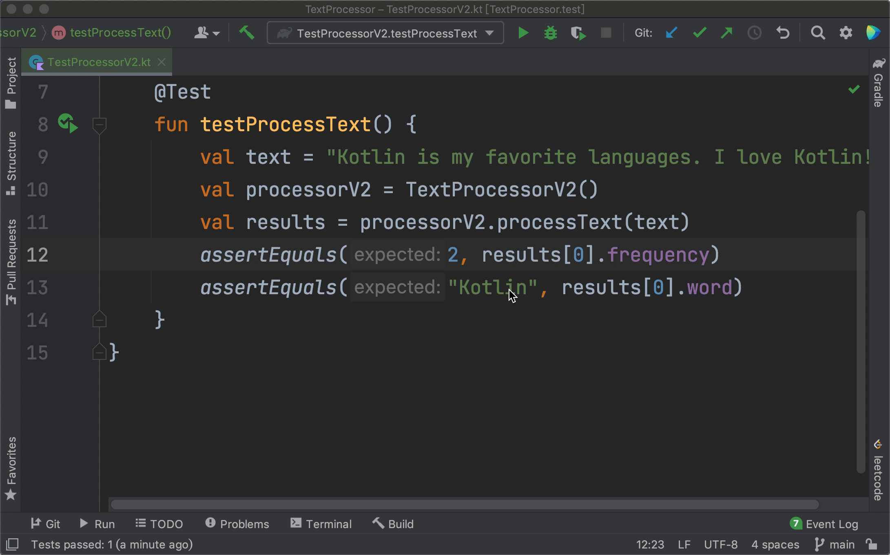
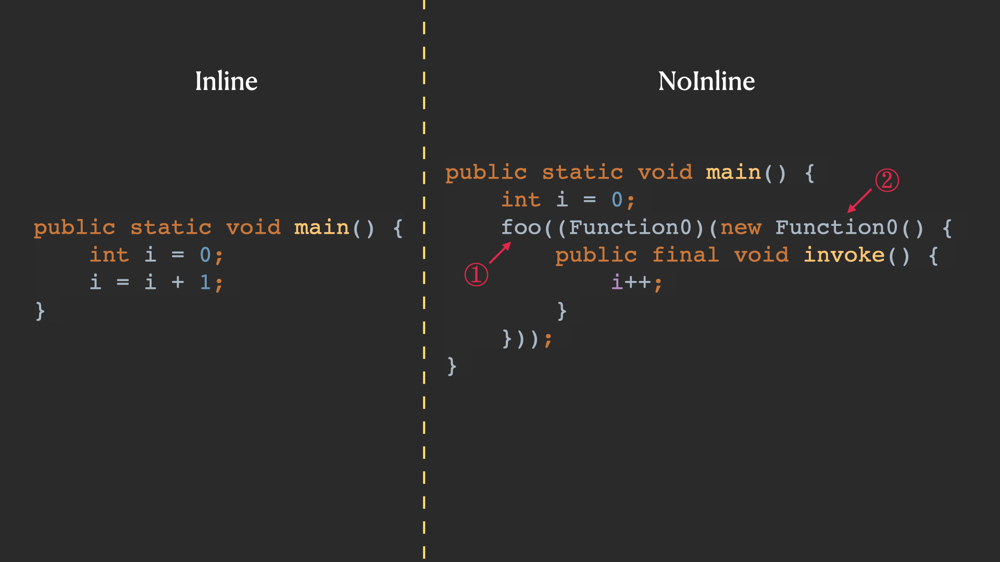
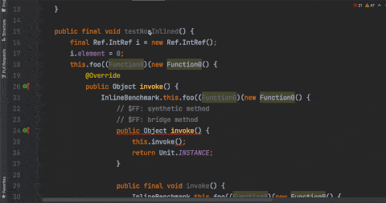
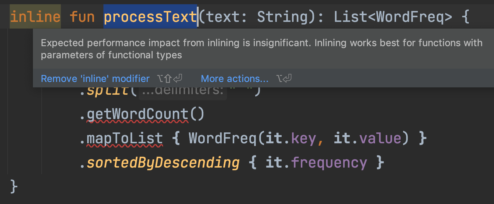
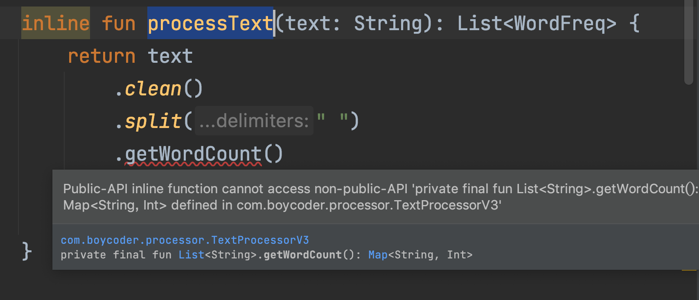

Audio实战：用Kotlin写一个英语词频统计程序
你好，我是朱涛。
前面几节课，我们学了一些 Kotlin 独有的特性，包括扩展、高阶函数等等。虽然我在前面的几节课当中都分别介绍了这些特性的实际应用场景，但那终归不够过瘾。因此，这节课我们来尝试将这些知识点串联起来，一起来写一个“单词词频统计程序”。
英语单词的频率统计，有很多实际应用场景，比如高考、研究生考试、雅思考试，都有对应的“高频词清单”，考生优先突破这些高频词，可以大大提升备考效率。那么这个高频词是如何统计出来的呢？当然是通过计算机统计出来的。只是，我们的操作系统并没有提供这样的程序，想要用这样的功能，我们必须自己动手写。
而这节课，我将带你用 Kotlin 写一个单词频率统计程序。为了让你更容易理解，我们的程序同样会分为三个版本。
1.0 版本：实现频率统计基本功能，使用“命令式风格”的代码。
2.0 版本：利用扩展函数、高阶函数来优化代码，实现“函数式风格”的代码。
3.0 版本：使用 inline 进一步提升软件的性能，并分析高阶函数的实现原理，以及 inline 到底能带来多大的性能提升。
在正式开始学习之前，我也建议你去 clone 我 GitHub 上面的 TextProcessor 工程：https://github.com/chaxiu/TextProcessor.git，然后用 IntelliJ 打开，并切换到 start 分支跟着课程一步步敲代码。
1.0 版本：命令式风格
在正式开始写代码之前，我们先看看程序运行之后是什么样的，一起来分析一下整体的编程思路：

首先，我们的词频统计程序是一个类，“TextProcessorV1”，这是第一个版本的类名称。text 是需要被统计的一段测试文本。
所以，我们很容易就能写出这样的代码结构：
class TextProcessorV1 {
fun processText(text: String): List<WordFreq> {
}
}
data class WordFreq(val word: String, val frequency: Int)这段代码中，我们定义了一个方法 processText，它接收的参数类型是 String，返回值类型是 List。与此同时，我们还定义了一个数据类 WordFreq，它里面有两个属性，分别是 word 和对应的频率 frequency。
所以，这个程序最关键的逻辑都在 processText 这个方法当中。
接下来我们以一段简短的英语作为例子，看看整体的统计步骤是怎样的。我用一张图来表示：

上面的流程图一共分为 4 个步骤：
步骤 1，文本清洗。正常的英语文本当中是会有很多标点符号的，比如“.”“！”，而标点符号是不需要被统计进来的。所以，在进行词频统计之前，我们还需要对文本数据进行清洗。这里的做法是将标点符号替换成空格。
步骤 2，文本分割。有了步骤 1 作为基础，我们的英语文本当中除了单词之外，就都是空格了。所以，为了分割出一个个单词，我们只需要以空格作为分隔符，对整个文本进行分割即可。在这个过程中，我们的文本数据就会变成一个个单词组成的列表，也就是 List 类型。
步骤 3，统计单词频率。在上个步骤中，我们已经得到了单词组成的 List，但这个数据结构并不适合做频率统计。为了统计单词频率，我们要借助 Map 这个数据结构。我们可以通过遍历 List 的方式，将所有单词都统计一遍，并将“单词”与“频率”以成对的方式存储在 Map 当中。
步骤 4，词频排序。在步骤 3 中，我们得到的词频数据是无序的，但实际场景中，频率越高的单词越重要，因此我们希望高频词可以放在前面，低频词则放在后面。
经过以上分析，我们就能进一步完善 processText() 方法当中的结构了。
class TextProcessorV1 {
fun processText(text: String): List<WordFreq> {
// 步骤1
val cleaned = clean(text)
// 步骤2
val words = cleaned.split(" ")
// 步骤3
val map = getWordCount(words)
// 步骤4
val list = sortByFrequency(map)
return list
}
}其中，步骤 2 的逻辑很简单，我们直接使用 Kotlin 标准库提供的 split() 就可以实现空格分割。其余的几个步骤 1、3、4，则是由单独的函数来实现。所以下面，我们就来分析下 clean()、getWordCount()、sortByFrequency() 这几个方法该如何实现。
文本清洗
首先，是文本清洗的方法 clean() 方法。
经过分析，现在我们知道针对一段文本数据，我们需要将其中的标点符号替换成空格：
// 标点 标点
// 清洗前 ↓ ↓
"Kotlin is my favorite language. I love Kotlin!"
// 空格 空格
// 清洗后 ↓ ↓
"Kotlin is my favorite language I love Kotlin "那么对于这样的逻辑，我们很容易就能写出以下代码：
fun clean(text: String): String {
return text.replace(".", " ")
.replace("!", " ")
.trim()
}这样的代码对于前面这种简单文本是没问题的，但这样的方式存在几个明显的问题。
第一个问题是普适性差。在复杂的文本当中，标点符号的类型很多，比如“,”“?”等标点符号。为了应对这样的问题，我们不得不尝试去枚举所有的标点符号：
fun clean(text: String): String {
return text.replace(".", " ")
.replace("!", " ")
.replace(",", " ")
.replace("?", " ")
.replace("'", " ")
.replace("*", " ")
.replace("#", " ")
.replace("@", " ")
.trim()
}那么随之而来的第二个问题，就是很容易出错，因为我们可能会遗漏枚举的标点符号。第三个问题则是性能差，随着枚举情况的增加，replace 执行的次数也会增多。
fun clean(text: String): String {
return text.replace("[^A-Za-z]".toRegex(), " ")
.trim()
}上面的正则表达式的含义就是，将所有不是英文字母的字符都统一替换成空格（为了不偏离主题，这里我们不去深究正则表达式的细节）。
这样，数据清洗的功能完成以后，我们就可以对文本进行切割了，这个步骤通过 split() 就能实现。在经过分割以后，我们就得到了单词的列表。接下来，我们就需要进行词频统计 getWordCount() 了。
词频统计
在 getWordCount() 这个方法当中，我们需要用到 Map 这个数据结构。如果你不了解这个数据结构也不必紧张，我制作了一张动图，描述 getWordCount() 的工作流程。

看过上面的 Gif 动图以后，相信你对词频统计的实现流程已经心中有数了。其实它就是跟我们生活中做统计一样，遇到一个单词，就把这个单词的频率加一就行。只是我们生活中是用本子和笔来统计，而这里，我们用程序来做统计。
那么，根据这个流程，我们就可以写出以下这样的频率统计的代码了，这里面主要用了一个 Map 来存储单词和它对应频率：
fun getWordCount(list: List<String>): Map<String, Int> {
val map = hashMapOf<String, Int>()
for (word in list) {
// ①
if (word == "") continue
val trim = word.trim()
// ②
val count = map.getOrDefault(trim, 0)
map[trim] = count + 1
}
return map
}上面的代码一共有两处需要注意，我们一个个看：
注释①，当我们将标点符号替换成空格以后，两个连续的空格进行分割后会出现空字符""，这是脏数据，我们需要将其过滤掉。
注释②，map.getOrDefault 是 Map 提供的一个方法，如果当前 map 中没有对应的 Key，则返回一个默认值。这里我们设置的默认值为 0，方便后面的代码计数。
这样，通过 Map 这个数据结构，我们的词频统计就实现了。而因为 Map 是无序的，所以我们还需要对统计结果进行排序。
词频排序
那么到这里，我们就又要将无序的数据结构换成有序的。这里我们选择 List，因为 List 是有序的集合。但由于 List 每次只能存储单个元素，为了同时存储“单词”与“频率”这两个数据，我们需要用上前面定义的数据类 WordFreq：
fun sortByFrequency(map: Map<String, Int>): MutableList<WordFreq> {
val list = mutableListOf<WordFreq>()
for (entry in map) {
if (entry.key == "") continue
val freq = WordFreq(entry.key, entry.value)
// ①
list.add(freq)
}
// ②
list.sortByDescending {
it.frequency
}
return list
}这部分的排序代码其实思路很简单：
注释①处，我们将 Map 当中的词频数据，封装到 WordFreq 数据类当中，并且添加到了 List 当中，这样就将所有的信息都放到了一个有序的集合当中来了；
注释②处，我们调用了 Kotlin 标准库提供的排序方法“sortByDescending”，它代表了以词频降序排序。
到这里，我们的 1.0 版本就算是完成了，按照惯例，我们可以写一个单元测试来看看代码运行结果是否符合预期。

由于我们的测试文本很简单，我们一眼就能分析出正确的结果。其中单词“Kotlin”出现的频率最高，是 2 次，它会排在 result 的第一位。所以，我们可以通过断言来编写以上的测试代码。最终单元测试的结果，也显示我们的代码运行结果符合预期。
这时候，你也许会想：测试的文本数据太短了，如果数据量再大一些，程序是否还能正常运行呢？
fun processFile(file: File): List<WordFreq> {
val text = file.readText(Charsets.UTF_8)
return processText(text)
}从代码中我们可以看到，readText() 就是 Kotlin 标准库里提供的一个扩展函数，它可以让我们非常方便地从文件里读取文本。增加这样一行代码，我们的程序就能够统计文件当中的单词频率了。
2.0 版本：函数式风格
好，下面我们就一起来实现下第二个版本的词频统计程序。这里，我想先带你回过头来看看咱们 1.0 版本当中的代码：
class TextProcessorV1 {
fun processText(text: String): List<WordFreq> {
val cleaned = clean(text)
val words = cleaned.split(" ")
val map = getWordCount(words)
val list = sortByFrequency(map)
return list
}
}是不是觉得咱们的代码实在太整齐了？甚至整齐得有点怪怪的？而且，我们定义的临时变量 cleaned、words、map、list 都只会被用到一次。
其实上面的代码，就是很明显地在用 Java 思维写 Kotlin 代码。这种情况下，我们甚至可以省略掉中间所有的临时变量，将代码缩减成这样：
fun processText(text: String): List<WordFreq> {
return sortByFrequency(getWordCount(clean(text).split(" ")))
}不过，很明显的是，以上代码的可读性并不好。在开篇词当中，我曾提到过，Kotlin 既有命令式的一面，也有函数式的一面，它们有着各自擅长的领域。而在这里，我们就完全可以借助函数式编程的思想来优化代码，就像下面这样：
fun processText(text: String): List<WordFreq> {
return text
.clean()
.split(" ")
.getWordCount()
.sortByFrequency { WordFreq(it.key, it.value) }
}可以发现，这段代码从上读到下，可读性非常高，它也非常接近我们说话的习惯：我们拿到参数 text，接着对它进行清洗 clean()，然后对单词频率进行统计，最后根据词频进行排序。
那么，我们要如何修改 1.0 版本的代码，才能实现这样的代码风格呢？问题的关键还是在于 clean()、getWordCount()、sortByFrequency() 这几个方法。
我们一个个来分析。首先是 text.clean()，为了让 String 能够直接调用 clean() 方法，我们必须将 clean() 定义成扩展函数：
// 原函数
fun clean(text: String): String {
return text.replace("[^A-Za-z]".toRegex(), " ")
.trim()
}
// 转换成扩展函数
fun String.clean(): String {
return this.replace("[^A-Za-z]".toRegex(), " ")
.trim()
}从上面的代码中，我们可以清晰地看到普通函数转换为扩展函数之间的差异：
原本的参数类型 String，在转换成扩展函数后，就变成了“接收者类型”；
原本的参数 text，变成了扩展函数的 this。

对应的，我们的 getWordCount() 方法也同样可以修改成扩展函数的形式。
private fun List<String>.getWordCount(): Map<String, Int> {
val map = HashMap<String, Int>()
for (element in this) {
if (element == "") continue
val trim = element.trim()
val count = map.getOrDefault(trim, 0)
map[trim] = count + 1
}
return map
}你能看到，原本是作为参数的 List，现在同样变成了接收者类型，原本的参数 list 集合变成了 this。
最后是 sortByFrequency()，我们很容易就能写出类似下面的代码：
private fun Map<String, Int>.sortByFrequency(): MutableList<WordFreq> {
val list = mutableListOf<WordFreq>()
for (entry in this) {
val freq = WordFreq(entry.key, entry.value)
list.add(freq)
}
list.sortByDescending {
it.frequency
}
return list
}同样的步骤，将参数类型变成“接收者类型”，将参数变成 this。不过，这里的做法并不符合函数式编程的习惯，因为这个方法明显包含两个功能：
功能 1，将 Map 转换成 List；
功能 2，使用 sort 对 List 进行排序。
因此针对这样的情况，我们应该再对这个方法进行拆分：
private fun <T> Map<String, Int>.mapToList(transform: (Map.Entry<String, Int>) -> T): MutableList<T> {
val list = mutableListOf<T>()
for (entry in this) {
val freq = transform(entry)
list.add(freq)
}
return list
}在上面的代码当中，为了让 Map 到 List 的转换更加得灵活，我们引入了高阶函数，它的参数 transform 是函数类型的参数。那么相应的，我们的调用处代码也需要做出改变，也就是传入一个 Lambda 表达式：
fun processText(text: String): List<WordFreq> {
return text
.clean()
.split(" ")
.getWordCount()
.mapToList { WordFreq(it.key, it.value) }
.sortedByDescending { it.frequency }
}看着上面的代码，我们几乎可以像读普通的英语文本一般地阅读上面的代码：首先是对 text 进行清理；然后使用 split 以空格形式进行分割；接着计算出单词的频率，然后再将无序的 Map 转换成 List；最后对 List 进行排序，排序的依据就是词频降序。
至此，我们的 2.0 版本就算完成了。让我们再次执行一次单元测试，看看我们的代码逻辑是否正确：

单元测试的结果告诉我们，代码运行结果符合预期。接下来，我们就可以进行 3.0 版本的开发工作了。
3.0 版本：inline 优化
在上一个版本当中，我们的 mapToList 被改造成了一个高阶函数。那到了这个版本，我们实际的代码量其实很少，只需要为 mapToList 这个高阶函数增加一个 inline 关键字即可。
// 增加inline关键字
// ↓
private inline fun <T> Map<String, Int>.mapToList(transform: (Map.Entry<String, Int>) -> T): MutableList<T> {
val list = mutableListOf<T>()
for (entry in this) {
val freq = transform(entry)
list.add(freq)
}
return list
}到这里，我们 3.0 版本的开发工作其实就完成了。
但是你要清楚，虽然我们只花几秒钟就能增加这个 inline 关键字，可我们这么做的原因却比较复杂。这涉及到 inline 关键字的实现原理。
不过，在正式研究 inline 之前，我们要先来了解下高阶函数的实现原理。由于 Kotlin 兼容 Java 1.6，因此 JVM 是不懂什么是高阶函数的，我们的高阶函数最终一定会被编译器转换成 JVM 能够理解的格式。
而又因为，我们的词频统计代码略微有些复杂，所以为了更好地研究高阶函数的原理，这里我们可以先写一个简单的高阶函数，然后看看它反编译后的代码长什么样。
// HigherOrderExample.kt
fun foo(block: () -> Unit) {
block()
}
fun main() {
var i = 0
foo{
i++
}
}以上代码经过反编译成 Java 后，会变成这样：
public final class HigherOrderExampleKt {
public static final void foo(Function0 block) {
block.invoke();
}
public static final void main() {
int i = 0
foo((Function0)(new Function0() {
public final void invoke() {
i++;
}
}));
}
}可以看到，Kotlin 高阶函数当中的函数类型参数，变成了 Function0，而 main() 函数当中的高阶函数调用，也变成了“匿名内部类”的调用方式。那么，Function0 又是个什么东西？
public interface Function0<out R> : Function<R> {
public operator fun invoke(): R
}Function0 其实是 Kotlin 标准库当中定义的接口，它代表没有参数的函数类型。在Functions.kt这个文件当中，Kotlin 一共定义了 23 个类似的接口，从 Function0 一直到 Function22，分别代表了“无参数的函数类型”到“22 个参数的函数类型”。
好，现在，我们已经知道 Kotlin 高阶函数是如何实现的了，接下来我们看看使用 inline 优化过的高阶函数会是什么样的：
// HigherOrderInlineExample.kt
/*
多了一个关键字
↓ */
inline fun fooInline(block: () -> Unit) {
block()
}
fun main() {
var i = 0
fooInline{
i++
}
}和前面的例子唯一的不同点在于，我们在 foo() 函数的定义处增加了一个 inline 关键字，同时，为了区分，我们也改了一下函数的名称。这个时候，我们再来看看它反编译后的 Java 长什么样：
public final class HigherOrderInlineExampleKt {
// 没有变化
public static final void fooInline(Function0 block) {
block.invoke();
}
public static final void main() {
// 差别在这里
int i = 0;
int i = i + 1;
}
}为了看得更加清晰，我们将有无 inline 的 main() 放到一起来对比下：

所以你能发现，inline 的作用其实就是将 inline 函数当中的代码拷贝到调用处。
而是否使用 inline，main() 函数会有以下两个区别：
在不使用 inline 的情况下，我们的 main() 方法当中，需要调用 foo() 这个函数，这里多了一次函数调用的开销。
在不使用 inline 的情况下，调用 foo() 函数时，还创建了“Function0”的匿名内部类对象，这也是额外的开销。
为了验证这一猜测，我们可以使用JMH（Java Microbenchmark Harness）对这两组代码进行性能测试。JMH 这个框架可以最大程度地排除外界因素的干扰（比如内存抖动、虚拟机预热），从而判断出我们这两组代码执行效率的差异。它的结果不一定非常精确，但足以说明一些问题。
不过，为了不偏离本节课的主题，在这里我们不去深究 JMH 的使用技巧，而是只以两组测试代码为例，来探究下 inline 到底能为我们带来多少性能上的提升：
// 不用inline的高阶函数
fun foo(block: () -> Unit) {
block()
}
// 使用inline的高阶函数
inline fun fooInline(block: () -> Unit) {
block()
}
// 测试无inline的代码
@Benchmark
fun testNonInlined() {
var i = 0
foo {
i++
}
}
// 测试无inline的代码
@Benchmark
fun testInlined() {
var i = 0
fooInline {
i++
}
}最终的测试结果如下，分数越高性能越好：
Benchmark Mode Score Error Units
testInlined thrpt 3272062.466 ± 67403.033 ops/ms
testNonInlined thrpt 355450.945 ± 12647.220 ops/ms从上面的测试结果我们能看出来，是否使用 inline，它们之间的效率几乎相差 10 倍。而这还仅仅只是最简单的情况，如果在一些复杂的代码场景下，多个高阶函数嵌套执行，它们之间的执行效率会相差上百倍。
为了模拟复杂的代码结构，我们可以简单地将这两个函数分别嵌套 10 个层级，然后看看它们之间的性能差异：
// 模拟复杂的代码结构，这是错误示范，请不要在其他地方写这样的代码。
@Benchmark
fun testNonInlined() {
var i = 0
foo {
foo {
foo {
foo {
foo {
foo {
foo {
foo {
foo {
foo {
i++
}
}
}
}
}
}
}
}
}
}
}
@Benchmark
fun testInlined() {
var i = 0
fooInline {
fooInline {
fooInline {
fooInline {
fooInline {
fooInline {
fooInline {
fooInline {
fooInline {
fooInline {
i++
}
}
}
}
}
}
}
}
}
}
}注意：以上的代码仅仅只是为了做测试，请不要在其他地方写类似这样的代码。
Benchmark Mode Score Error Units
testInlined thrpt 3266143.092 ± 85861.453 ops/ms
testNonInlined thrpt 31404.262 ± 804.615 ops/ms从上面的性能测试数据我们可以看到，在嵌套了 10 个层级以后，我们 testInlined 的性能几乎没有什么变化；而当 testNonInlined 嵌套了 10 层以后，性能也比 1 层嵌套差了 10 倍。
在这种情况下，testInlined() 与 testNonInlined() 之间的性能差异就达到了 100 倍，那么随着代码复杂度的进一步上升，它们之间的性能差异会更大。
我在下面这张 Gif 动图里展示了它们反编译成 Java 的代码：

我们能看到，对于 testNonInlined()，由于 foo() 嵌套了 10 层，它反编译后的代码也嵌套了 10 层函数调用，中间还伴随了 10 次匿名内部类的创建。而 testInlined() 则只有简单的两行代码，完全没有任何嵌套的痕迹。难怪它们之间的性能相差 100 倍！
inline 的局限性
看到这，你也许会有这样的想法：既然 inline 这么神奇，那我们是不是可以将“词频统计程序”里的所有函数都用 inline 来修饰？
答案当然是否定的。事实上，Kotlin 官方只建议我们将 inline 用于修饰高阶函数。对于普通的 Kotlin 函数，如果我们用 inline 去修饰它，IntelliJ 会对我们发出警告。而且，也不是所有高阶函数都可以用 inline，它在使用上有一些局限性。
举个例子，如果我们在 processText() 的前面增加 inline 关键字，IntelliJ 会提示一个警告：

这个警告的意思是：“对于普通的函数，inline 带来的性能提升并不显著，inline 用在高阶函数上的时候，才会有显著的性能提升”。
另外，在 processText() 方法的内部，getWordCount() 和 mapToList() 这两个方法还会报错：

出现这个报错的原因是：getWordCount() 和 mapToList() 这两个函数是私有的，无法 inline。为什么呢？
前面我们提到过：inline 的作用其实就是将 inline 函数当中的代码拷贝到调用处。由于 processText() 是公开的，因此它会从外部被调用，这意味着它的代码会被拷贝到外部去执行，而 getWordCount() 和 mapToList() 这两个函数却无法在外部被访问。这就是导致编译器报错的原因。
所以，inline 虽然可以为我们带来极大的性能提升，但我们不能滥用。在使用 inline 的时候，我们还需要时刻注意它的实现机制，有时候，稍有不慎就会引发问题。
除此之外，在第 3 讲中我们曾提到：Kotlin 编译器一直在幕后帮忙做着翻译的好事，那它有没有可能“好心办坏事”？
这个问题，现在我们就能够回答了：Kotlin 编译器是有可能好心办坏事的。如果我们不够了解 Kotlin 的底层细节，不够了解 Kotlin 的语法实现原理，我们就可能会用错某些 Kotlin 语法，比如 inline，当我们用错这些语法后，Kotlin 在背后做的这些好事，就可能变成一件坏事。
小结
最后，让我们来做个简单的总结。
通过 1.0 版本的开发，我们初步实现了单词频率统计的功能，同时也使用了面向对象的思想，也使用了单元测试；
在 2.0 版本的开发中，我们初步尝试了函数式编程的风格，在这个过程中，我们灵活运用了我们前面学习的扩展、高阶函数知识。
在 3.0 版本中，我们使用 inline 优化了高阶函数。随后我们着重研究了高阶函数的原理，以及 inline 背后的细节。在这个过程中，我们发现 inline 可以为高阶函数带来超过 100 倍的性能提升，同时我们也了解到 inline 并不是万能的，它也存在一定的局限性。
经过这节课的实战演练之后，相信你一定感受到了 Kotlin 函数式风格的魅力。在日后不断地学习、实操中，我也希望，你可以把 Kotlin 函数式的代码应用到自己的开发工作当中，并且充分发挥出 Kotlin 简洁、优雅、可读性强的优势。
思考题
咱们的词频统计程序其实还有很多可以优化和提升的地方，请问你能想到哪些改进之处？欢迎你在评论区分享你的思路，我们下节课再见。
COMMUNITY NOTES
读者评论
这篇文章暂时没有读者留言。